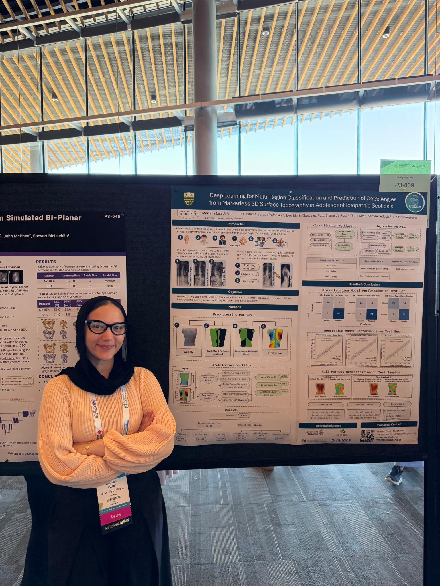
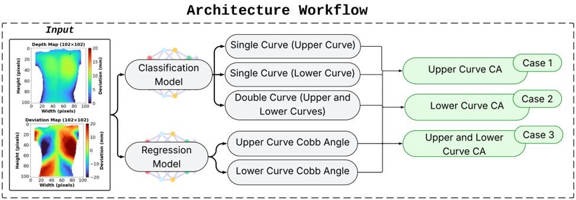
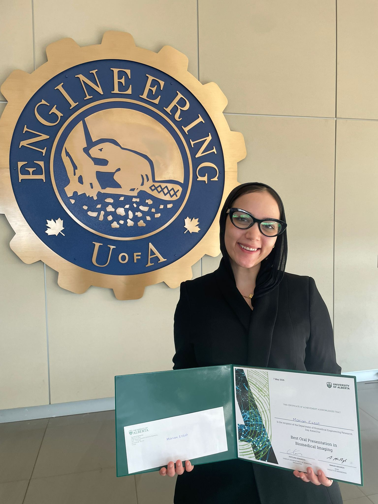
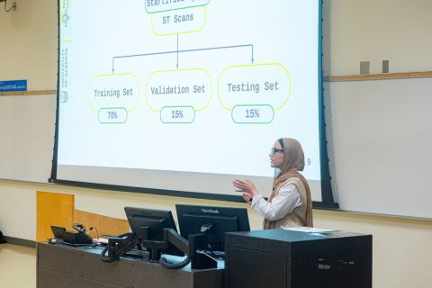
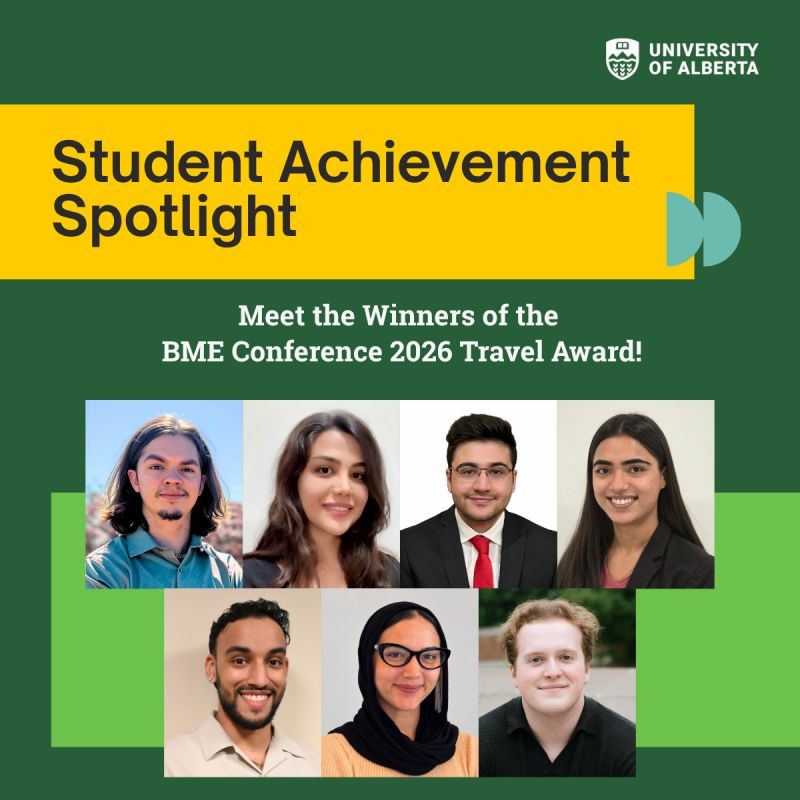
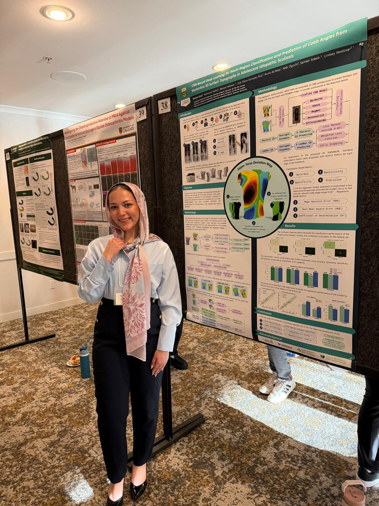
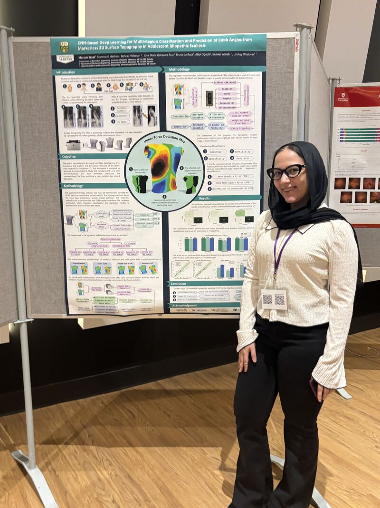
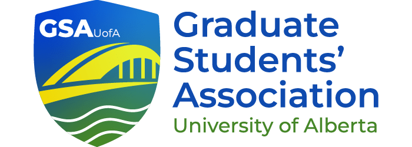

WCB 2026 · Vancouver
10th World Congress of Biomechanics
Presented my work on deep learning for multi-region curve classification and Cobb-angle prediction from markerless 3D surface topography.
RESEARCH
My MSc research develops a two-stage framework that first identifies which curve regions are present and then estimates their Cobb angles from non-ionizing surface measurements.
MSC THESIS PROJECT
The framework combines regional curve classification with region-specific regression. It uses 3D torso surface representations to detect upper and lower curves and then retain Cobb-angle estimates for the detected regions.

Two-stage classification and regression architecture workflow.RESEARCH HIGHLIGHTS

Presented my work on deep learning for multi-region curve classification and Cobb-angle prediction from markerless 3D surface topography.

Recognized for my research presentation at Biomedical Engineering Research Day.

Presented my graduate research at the Faculty of Engineering Graduate Research Symposium.

Selected as a recipient of a $500 travel award supporting participation in the Alberta Biomedical Engineering Conference.

Presented my work on deep learning for multi-region classification and Cobb-angle prediction from markerless 3D surface topography.

Presented my research poster, connected with researchers and industry professionals, and learned about emerging work in medical technology.
AWARDS & RESEARCH SUPPORT
Selected awards and funded research opportunities connected to my graduate work.

TRAVEL AWARD · 2026
Received a $500 GSA travel award to support participation in the 10th World Congress of Biomechanics (WCB 2026) in Vancouver.
TRAVEL AWARD · 2026
Selected for a $500 travel award supporting participation in the Alberta Biomedical Engineering Conference.
CLINICAL RESEARCH
Clinical 3D surface-topography studies at Kaye Edmonton Clinic designed to evaluate change over time and the repeatability of the scanning process.
LONGITUDINAL STUDY · AIS
Collect longitudinal 3D surface-topography data from patients with adolescent idiopathic scoliosis (AIS), ages 10–18, to evaluate how well the app and website track changes in spinal and torso shape over time and to train our models to detect changes associated with increases or decreases in Cobb angle.
Participants are scanned at baseline, 3, 6, 9, and 12 months.
RELIABILITY STUDY · 3D SCANNING Organized and participated in a reliability study designed to quantify variability in 3D surface-topography acquisition using two operators and three sensing technologies: Structure Sensor, LiDAR, and TrueDepth. Repeated scans are used to evaluate inter-rater variability between operators, intra-rater variability for repeated scans by the same operator, and variability across the three sensing technologies.
Scanner & Operator Variability
2operators
3sensors
↻repeat scans